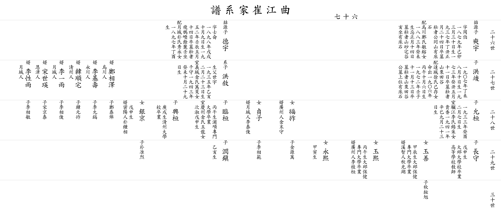

| 곡 강 최 가 계 보 |
| 이전☜ 쪽 67 ☞다음 |
| 26세 |
▲ 석우 奭宇 |
아버지 ▲철원(喆源)의 맏아들 자 주백(周伯) 1879년(己卯) 3월 30일생 1937년(丁丑) 1월 24일 별세 묘 장자 공동산 상석 있음 할머니 오천정씨 민용(敏鎔)의 따님 1883년(癸未)생 제삿날 1월 14일 묘 장자산 사택곡(砂宅谷) 亥坐 상석 있음 |
▲ 덕우 德宇 |
아버지 ▲철원 (喆源)의 둘째 아들 자 사륜(士侖) 1898년(戊戌) 10월 9일생 1952년(壬辰) 5월 14일 별세 묘 장자 비아고개(飛鴉嶝) 기슭 壬坐 할머니 월성박씨 수영(秀永)의 따님 1897년(丁酉)생 사위 오천인 정상택(鄭相澤) 외손 태엽(泰燁) 사위 청주인 한순택(韓順宅) 외손 원조(元祚) 사위 월성인 이일우(李一雨) 외손 상준(相俊) 사위 은진인 송세영(宋世瑛) 외손 경태(京泰) 사위 월성인 이성우(李性雨) 외손 상민(相敏) |
||
| 27세 |
홍준 洪竣 |
1907년(丁未) 8월 10일생 1973년(癸丑) 5월 11일 별세 묘 장자산 율전곡(栗田谷) 할머니 달성서씨 기존(己存)의 따님 명출(命出) 1906년(丙午) 10월 6일생 1972년(壬子) 11월 13일 별세 묘 장자산 율전곡 할아버지 묘 위쪽 상석 있음 딸 복조(福祚) 사위 광주인 김말수(金末守) 외손 원만(源萬) 딸 정자(貞子) 사위 월성인 이태준(李泰俊) 외손 상범(相範) |
계자 홍서 洪敘 |
생부 세우(世宇) 1935년(乙亥) 2월 23일생 할머니 의성김씨 만호(萬昊)의 따님 천수(千守) 1943년(癸未) 10월 29일생 |
||
| 28세 |
윤환 允桓 |
1933년(癸酉) 2월 7일생 아내 여강이씨 석채(錫采)의 따님 귀향(貴香) 1941년(辛巳) 9월 23일생 딸 옥선(玉善) 갑진생 대구 보건전문대학 졸업 사위 계지인 추광호(秋光湖) 외손 현욱(鉉旭) 딸 옥희(玉熙) 병오생 대구 보건전문대학 졸업 사위 광주인 이계환(李桂桓) 딸 영희(永熙) 갑인생 |
임환 臨桓 |
병오생 포항전문대학 졸업 아내 경주김씨 오룡(五龍)의 따님 차숙(次淑) 무신생 |
흥환 興桓 |
경술생 청주대학교 졸업 |
| 29세 |
장수 長守 |
무신생 대구대학교 졸업 고등학교 교사 |
윤진 潤鎭 |
을해생 | ||
| 30세 | ||||||
| 이전☜ 쪽 66 ☞다음 |
|  |